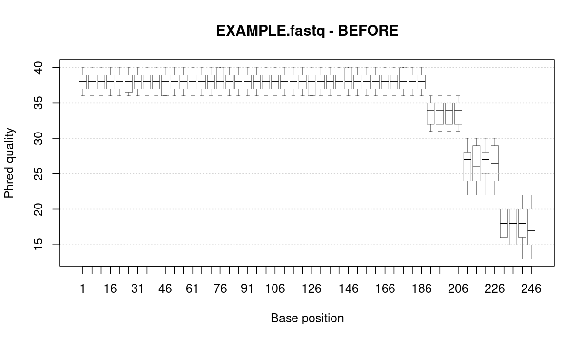
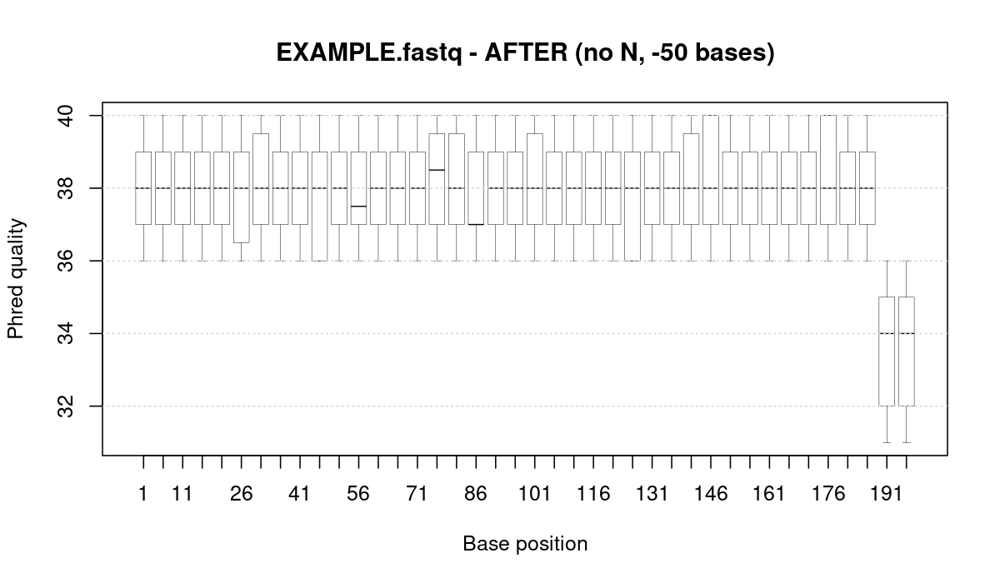

Inspect read quality
Encoded quality values were converted into numeric Phred scores and visualized by base position.
Project 03 · Bioinformatics mini project
A reproducible bioinformatics workflow for analysing sequencing read quality, filtering unreliable reads and trimming FASTQ data using GNU R, R Markdown and Bioconductor.
The project focuses on practical preprocessing of sequencing reads: Phred quality analysis, quality boxplots, filtering, trimming and export of a cleaned FASTQ file.
Project goal
The aim was to inspect quality scores across sequencing reads, identify problematic regions and apply filtering and trimming rules to produce a cleaner dataset for further analysis.
Encoded quality values were converted into numeric Phred scores and visualized by base position.
Reads with poor quality profiles were removed according to selected quality threshold rules.
Low-quality read ends were trimmed while preserving the link between DNA bases and quality scores.
Methodology
FASTQ reads were loaded together with their sequence identifiers and base-level quality scores.
Quality scores were converted from encoded characters into numeric Phred values.
Boxplots were used to inspect quality distribution across read positions.
Reads that did not meet selected quality criteria were excluded from the dataset.
Low-quality ends were trimmed and the cleaned FASTQ file was saved.
Technologies
The project combines R-based sequence data processing with reproducible reporting.
Used for FASTQ processing, quality score analysis, filtering and plotting.
Bioconductor package used to read, process and write FASTQ sequencing data.
Used through Bioconductor objects for handling biological sequence data.
Used to prepare a reproducible report with code, plots and interpretation.
The standalone R script can be run on FASTQ input files from the terminal.
Used for project organization and version control.
Results
The original reads were evaluated using per-base Phred quality scores. After filtering and trimming, the final dataset retained reads with a more reliable quality profile.


Quality summary
Replace the placeholder values below with the final statistics from your R output. This section makes the project look more like a complete data analysis.
Number of reads before processing.
Percentage of reads retained after filtering.
Example Phred threshold used for filtering decisions.
Processed reads saved as a new FASTQ file.
Filtering decision
Reads containing too many bases below the selected Phred quality threshold were excluded to reduce unreliable sequence information.
The quality profile showed that read ends can contain less reliable positions, so trimming was used to keep the more trustworthy part of each read.
Filtering and trimming were performed on the FASTQ object to preserve the connection between DNA bases, quality values and read metadata.
Code example
The analysis was prepared in R Markdown and exported as a standalone R script. The script can process FASTQ input and save a cleaned FASTQ file together with a final quality plot.
library(ShortRead)
fastq <- readFastq("input.fastq")
seq <- sread(fastq)
q <- quality(fastq)
qual <- as(q, "matrix")
low_quality_count <- rowSums(qual < 20)
keep <- low_quality_count < 10
filtered <- fastq[keep]
trimmed <- narrow(filtered, start = 1, end = 100)
writeFastq(trimmed, "processed_reads.fastq", compress = FALSE)Repository
The repository contains the project page, quality figures, R script, R Markdown source and PDF report.
fastq-qc/
├── index.html
├── style.css
├── README.md
├── figures/
│ ├── fastq_before.png
│ └── fastq_after.png
├── code/
│ ├── fastq_filter_trim.R
│ └── r_fastq.Rmd
└── reports/
└── proj4_report.pdf
The figures folder contains the quality plots used on this portfolio page.
The code folder stores the R script and R Markdown file.
The reports folder contains the final PDF report.
Project files
The main files include the standalone R script, R Markdown report source and final PDF report.
Standalone script for reading FASTQ data, applying filtering and trimming, and saving processed reads.
code/fastq_filter_trim.R
Reproducible analysis document containing code, quality plots and explanation of the processing strategy.
code/r_fastq.Rmd
Final PDF report with quality plots before and after processing and a description of the implementation.
reports/proj4_report.pdf
PNG figures showing the read quality distribution before and after filtering and trimming.
figures/fastq_before.png
Challenges
Sequences and quality scores had to be processed together to avoid breaking the FASTQ structure.
Filtering and trimming parameters were selected based on the observed Phred quality distribution.
The workflow was documented in R Markdown and converted into a reusable R script.
What I learned